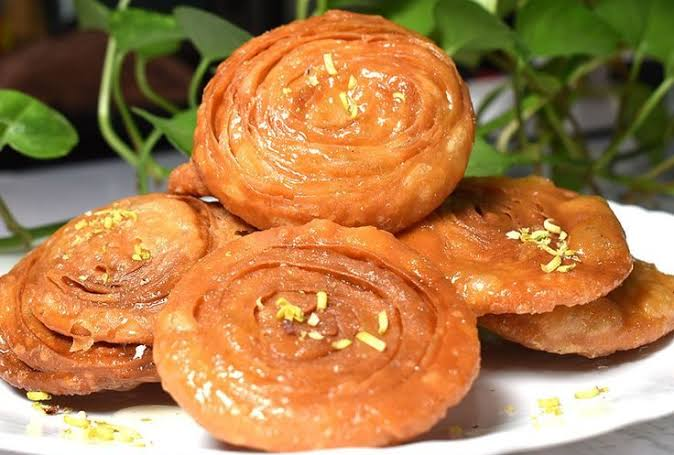

Mysore Pak
Mysore Pak is a world-famous Karnataka sweet crafted from gram flour, ghee, and sugar, originating from the royal kitchens of Mysore Palace with a rich, melt-in-the-mouth texture.
Ingredients
- 1 cup besan (gram flour)
- 2 cups sugar
- ¾ cup water
- 1½ cups ghee (clarified butter)
- ¼ tsp cardamom powder
Instructions
- Dry roast besan on low heat for 2-3 minutes until fragrant. Do not brown.
- Boil sugar and water to make syrup. Cook until it reaches one-string consistency.
- Add roasted besan to syrup while stirring continuously to avoid lumps.
- Add ghee in small increments, stirring constantly. The mixture will start leaving sides of pan.
- Once it forms a porous, spongy mass, quickly transfer to a greased plate.
- Let it cool completely before cutting into squares or diamonds. Store in airtight container.

Dharwad Peda
Dharwad Peda is an iconic Karnataka sweet made by slowly caramelizing thickened milk and sugar, renowned for its rich, deep caramel flavor and signature grainy texture.
Ingredients
- 1 liter full-fat milk
- 1 cup sugar
- ½ tsp cardamom powder
- 2 tbsp khoya (mawa), crumbled
- 1 tsp ghee (for greasing)
Instructions
- Boil milk in a heavy-bottomed vessel. Reduce heat and simmer, stirring frequently to prevent burning.
- Cook until milk reduces to about one-third its original volume and turns light brown (about 45 mins).
- Add sugar and continue cooking on low heat, stirring constantly.
- When mixture thickens and leaves sides of pan, add cardamom powder and crumbled khoya.
- Cook for another 5 minutes until it forms a soft dough-like consistency.
- Cool slightly. Grease hands with ghee and shape into small flat discs. Let them set completely.
.jpg)
Obbattu
Obbattu (Holige) is an iconic Karnataka sweet flatbread stuffed with cooked lentils and jaggery, cooked until golden on a hot griddle, and traditionally served warm with melted ghee.
Ingredients
- For Dough: 2 cups all-purpose flour, ½ cup whole wheat flour, 2 tbsp oil, salt, water
- For Filling: 1 cup chana dal, 1 cup jaggery (grated), ½ tsp cardamom powder, 1 tbsp ghee
- Extra ghee for cooking
Instructions
- Pressure cook chana dal until very soft. Drain excess water and mash coarsely.
- Cook mashed dal with jaggery on low heat until moisture evaporates and it becomes thick. Add cardamom powder and ghee. Cool completely.
- Knead dough with flour, oil, salt, and water until soft and pliable. Rest for 30 minutes.
- Divide dough and filling into equal portions. Roll out dough, place filling in center, seal edges, and roll gently into thin circles.
- Cook on hot tawa with generous ghee on both sides until golden brown spots appear.
- Serve warm with extra ghee drizzled on top.

Chiroti
Chiroti is a delicate, layered Karnataka pastry fried until golden and flaky, served topped with powdered sugar or soaked in warm, saffron-cardamom milk.
Ingredients
- 2 cups all-purpose flour
- ½ cup rice flour
- 3 tbsp ghee (melted)
- Pinch of salt
- Water (as needed)
- Oil for deep frying
- For Serving: Powdered sugar OR warm milk infused with saffron & cardamom
Instructions
- Mix flours, salt, and melted ghee. Add water gradually to form a stiff dough. Rest for 30 minutes.
- Divide dough into small balls. Roll each ball extremely thin (almost translucent) using rice flour to prevent sticking.
- Fold the rolled sheet like an accordion or fan. Roll again gently into a small circle.
- Heat oil on medium-low heat. Fry chirotis one by one until they puff up and turn golden crisp.
- Drain on paper towels. They will become flaky as they cool.
- Serve dusted with powdered sugar OR soak in warm saffron-cardamom milk for 5 minutes before serving.

Kesari Bath
Kesari Bath is a vibrant, aromatic Karnataka sweet made from roasted semolina, ghee, and cardamom, famously paired with savory khara bath to form the iconic chow chow bath.
Ingredients
- 1 cup fine rava (semolina)
- 2½ cups water
- ¾ cup sugar
- ½ cup ghee
- ½ tsp cardamom powder
- Pinch of orange food color (optional)
- 2 tbsp cashews, chopped
- 1 tbsp raisins
Instructions
- Dry roast rava on low heat until fragrant and lightly golden. Set aside.
- Boil water with sugar, food color, and half the ghee. Once boiling, add roasted rava slowly while stirring continuously to avoid lumps.
- Cover and cook on low heat for 5-7 minutes until rava absorbs all water and becomes soft.
- Add remaining ghee, cardamom powder, cashews, and raisins. Mix well.
- Cook for another 2-3 minutes until ghee starts separating from sides.
- Serve warm. Traditionally paired with Khara Bath (savory semolina) as Chow Chow Bath.